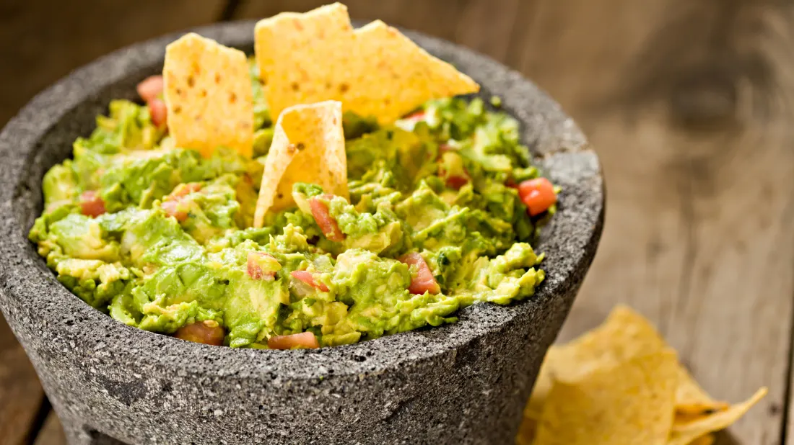

Recipes Worth Gatekeeping
| The Cookbook

Table of contents
Basque Cheesecake
|
Bomb Guacamole
|
Mac n' Cheese
3 Ingredient Basque Cheescake

Yields:
1-9, depends
|
Total Time:
22 Mins
|
Author:
Kirbie Cravings
Ingredients
-
2 (8 oz/227 g) blocks full fat
cream cheese
,
total weight of 16 oz, softened to room
temperature
-
3/4 cup (6 oz/177 ml) full fat sweetened
condensed milk
- 3 large eggs
Instructions
-
Preheat oven to 500°F (260°C). Spray the interior of a 7-inch
round
spring form cake pan or a solid one-piece 7 inch round
cake pan
with cooking spray and then line it with a large
enough sheet of
parchment paper so that it completely covers
the interior of the cake
pan. Press the parchment paper as
much as possible into the sides of
the pan so that it sticks
to the sides of the pan and doesn’t cause too
many indents
in the final cake. You must line your cake pan with a
single
sheet of parchment paper if using a springform pan because
otherwise, the batter will leak through. The cake is supposed to
look rustic.
-
Add all ingredients to a food processor. Blend on high speed
until
you have a smooth batter. Pause a few times to scrape
the sides of
the food processor with a spatula to make sure
all the ingredients
are incorporated.
-
Pour the batter into the prepared cake pan. Place the cake into
the
oven and bake for about 15-18 minutes or until the edges
turn a
dark brown and puff up. Watch the cake carefully
during the last
few minutes of baking so that it doesn't
burn. The center will still
be quite jiggly, more pale in
color and slightly sunken in. Do not
wait for the center to
be fully cooked. The cake is not supposed to
be set in the
center. Also, the edges of your cake will burn if you
cook
it too long.
-
Let the cheesecake cool and set before eating. As it cools, the
sides will deflate a little so that the cake surface
becomes even.
The cake can be enjoyed soon after it is fully
cooled but for the
best flavor I recommend refrigerating the
cake for a few hours.
This helps the flavors develop better
and it also will help the cake
set firmer so that it is
easier to cut and serve. Store any uneaten
cake in the
fridge.
Back to TOP
BOMB Guacamole

Yields:
6
|
Total Time:
15 Mins
|
Author:
PWWB Jess Larson
Ingredients
-
2 large, ripe avocados, halved and de-seeded
-
¼ medium red onion, finely diced (approx. ¼ cup)
-
2 jalapeño peppers, de-seeded as desired and
finely diced
-
2 cloves garlic, roughly chopped
-
1 large, juicy lime or 1 small lemon, juiced
(approx. 3 tablespoons)
-
⅓ cup finely chopped cilantro
-
1 teaspoon kosher salt
-
heaping ½ teaspoon garlic powder
-
heaping ½ teaspoon chile lime seasoning such
as Tajíin
-
for serving, as desired: finely chopped cilantro,
tortilla chips, etc.
Instructions
-
Smash the aromatics: Add the onion, jalapeno, and garlic
to a resealable
bag. Season with a pinch of kosher salt.
Seal the bag, pressing out as
much air as possible so the
bag doesn’t pop. Using a rolling pin or
heavy-bottomed pan,
carefully smash down on the bag to release the
natural
juices of the vegetables. The aromatics should be juicy and
softened, but not smashed into a fine paste. (Alternatively, if
you have
a large mortar and pestle or traditional molcajete,
you can combine all
of the ingredients in the bowl and use
the handle to press down and
smash the aromatics.)
-
Mix the guacamole: Use a spoon to scoop the avocado flesh
into a
large bowl, then add the smashed vegetables from Step
1 and all
remaining listed ingredients (lime juice – Tajín).
Use a wooden spoon
to gently smash the avocados to your
desired consistency and stir to
combine well. Taste and
adjust seasoning as desired – depending on the
size of your
avocados, you may need a little extra salt or lime juice.
-
Serve: Transfer the guacamole to a serving dish. Garnish
with additional
cilantro and serve immediately with tortilla
chips. This guacamole is also
a wonderful add-on for any of
your favorite tacos, taco salads, burrito
bowls, nachos, and
more. Enjoy!
Back to TOP
NOT Your Average Mac N' Cheese

Yields:
8
|
Total Time:
45 Mins
|
Author:
Tini
Ingredients
- 1lb Cork screw noodles
- 1lb mozzarella
- 1lb Colby jack
- ½ lb sharp cheddar cheese
- ½ teaspoon garlic powder
- ½ teaspoon onion powder
- ¼ teaspoon salt
- ¼ teaspoon black pepper
- 3 tablespoon butter
- 3 tablespoon flour
- 1 can evaporated milk
- 2 cups heavy cream
- 1 tablespoon Dijon mustard
Instructions
-
Begin by cooking the pasta according to package instructions.
Drain
and set aside. Preheat your oven to 350°F (175°C).
-
Shred all the cheese and mix it in a bowl, then divide the
mixture
into two portions. In a small bowl, prepare the
seasoning by
combining salt, pepper, garlic powder, and
smoked paprika.
-
In a large pan, melt butter over medium heat to start the roux.
Once
the butter is melted, stir in half of the seasoning,
followed by the
flour. Gradually whisk in the evaporated
milk, stirring vigorously to
eliminate any lumps. Cook until
the mixture thickens and begins to
boil.
-
Add the heavy cream and the remaining seasoning, continuing to
stir. Stir in Dijon mustard and cook until the sauce
thickens further.
-
Slowly add the shredded cheese to the roux, a little at a time,
stirring
until fully melted. Once the cheese is
incorporated, mix in the cooked
pasta, ensuring it’s evenly
coated.
-
Grease a baking dish and pour in half of the pasta mixture.
Layer it
with half of the remaining shredded cheese, then
add the rest of the
pasta. Top with the remaining shredded
cheese.
-
Bake the dish in the oven for 25-30 minutes, or until the top
is fully
melted. For a crispy, golden crust, broil for an
additional 2 minutes.
-
Remove from the oven, garnish with fresh chopped chives, and
serve warm.
Back to TOP